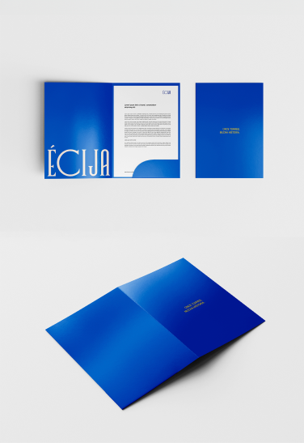

Web de información sobre el proceso seguido en la creación de la Marca
Ciudad de Écija. Descubre las fases por las que ha pasado el proyecto,
encuestas realizadas, para qué sirve esta marca y el por qué de las
decisiones tomadas.
Diseñada con el objetivo demostrar con total transparencia cada paso dado en
el proceso y acercar esta iniciativa al público. Queremos que todos los
ciudadanos se sientan parte de este relato compartido y conozcan a fondo
nuestra ciudad.

Proyecto realizado por
Marcos Martín España
.
Trabajo Fin de Grado Diseño Gráfico